ComputeShader整活-屏幕碎裂剥落效果
Marc 4, 2023
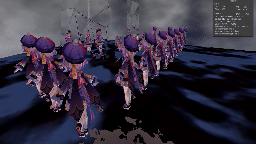
最☆终★效☆果
目录
1.思路基础。
2.贴图准备（用到crazyBump和任意绘图软件）。
3.ComputeShader和屏幕后处理。
4.后处理ComputeShader需要注意的几个问题。
5.效果优化-离散化。
6.不知为什么效果非常好的-中值滤波。
7.一些扩展思路
用多了compute shader之后充分感觉到了cs的强大之处，但又觉得很多cs能完成的效果哪怕不用cs也可以实现，于是就想了想哪些功能只能靠compute shader来实现（莫名其妙的心理）。
上次的雪地实验中利用到了compute shader可以储存精度大于1/256并且数值范围超过[0,1]的值的特性，这个是用shaderblit做不到的，因为shader中能够作为二维参量传入的只有纹理，而纹理受限于贴图本身能存储的数据，这就是典型的例子之一。
于是想到compute shader另一个很大的一个优势就是在于它可以在当前的位置（id.xy)去修改其它位置（例如float2(id.x+1,id.y-1)之类）的值，这很适合用于在动态过程中模拟一些有一定特性的效果：你可以从当前位置和当前位置的参量去推知下一帧里另一个位置的参量，但却无法或很难从上一帧中特定位置的参量来推知这个位置的参量。
举个例子就是速度，如果我知道一个点上的运动速度，那么我很容易就能知道下一帧时这个点移动到的目的地点的像素值，只要把当前这个位置的像素值赋值给它就行了。但是如果我要根据上一帧的数据来推知当前这个点的像素值就非常困难，因为我不知道是上一帧的哪个像素点移动到了当前的位置。
而这个功能靠compute shader就可以解决，因为上面说的，它能够去修改当前位置以外的位置，而且还能比较精确地完成这个任务。说起速度，第一时间想到的场景就是用速度场+fft去模拟水体。
但我不想算，想摆烂，刚好打了雷神周本，就用这个方法去实现一下雷神碎屏斩的效果，实现的结果非常简单，不过保留了可扩展性，算是自己勉强觉得有收获的成果吧。
不过，如果想实现这个效果，最简单的方法还是截图rt+提前准备好的mesh+公告牌效果+mesh破碎物理模拟，做起来简单，甚至性能上可能也更高一点，这里选择用compute shader的方式虽然也有自己的独特优势，但初衷纯粹是图一乐啦。
1.思路基础
梳理一下整个要实现的效果：碎裂时屏幕破碎，并且在剥落之前碎裂的屏幕图像一直保持为碎裂瞬间屏幕的图像，随后碎裂屏幕一片片剥落，在剥落的过程中不被碎裂屏幕遮挡的部分有正常的视野，剥落一直持续到整个屏幕恢复原状。思路在绪论里已经有提到过一些，简单来讲，就是用compute shader来根据像素点的速度对屏幕的碎裂剥落进行模拟，按制作流程，我把整个效果分为几个部分：
1.控制器：控制屏幕碎裂的时机，以及掉落的过程，我们会根据这个过程来计算具体数值来模拟掉落的过程，控制器同样负责整个流程里面用到的变量引用。
2.compute shader模拟：用来进行具体的模拟，它的主要输入应该有一张速度贴图，并且输出一张处理过的数据，用来和后处理的shader联动。
3.后处理shader：后处理shader，负责碎裂效果本身，shader本身并不负责动态模拟，动态的模拟由cs进行，cs输出的处理后的数据在这个shader中用于完成动态效果。
4.屏幕RT：在破碎发生时进行截图，作为碎裂屏幕图像的MainTex。
2.贴图准备
一堆好的贴图的好的效果的基础，这就是美术带给我们的自信。根据上述所说，我们主要需要的是一张“速度”贴图，这张贴图只需要存“速度”值就可以了，此外我们还需要一张法线贴图用来完成基础的屏幕碎裂的效果，屏幕碎裂的效果比较基础，随便百度一下就能看到众多大佬的题解，这里就不介绍了。
这些贴图要获取非常简单，首先我们百度找到一张玻璃图片。
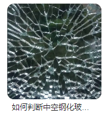 把这张图片放入绘图软件，把饱和度拉到最低，然后把对比度拉满，选定中间黑的地方涂白，我们就能得到一张“线稿”。
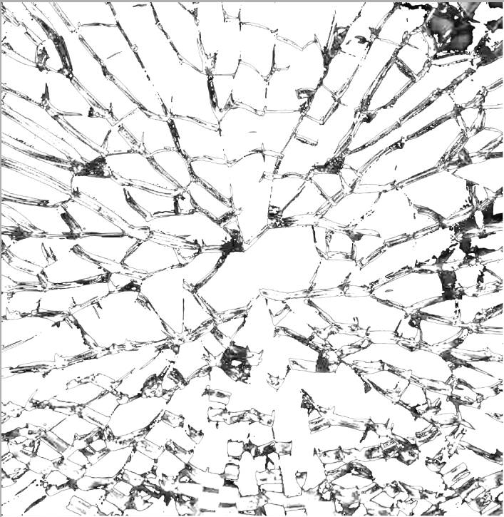 这个线稿的线条太过粗糙了，我们需要一些更精细的线条，于是根据现有的线条手绘一张，可以适当加入一些细节，但我比较懒，就随便画画了。
画完之后，把得到的线稿放入crazyBump，挑张喜欢的，就得到了法线贴图。
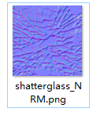 都到这个地步了，速度图想必大家也知道怎么画了，我们先规定一下：我们靠一个阈值Threshold来控制整个剥落的进程，1表示刚刚进行碎裂，-1表示已经完全剥落。
我们知道，加速度的公式是x=at^2，这个t当然和上面提到的Threshold是线性相关的，在我们屏幕后处理坐标不变的情况下，我们希望越靠上，也就是y值越大的碎片更晚掉落。
然后发现，实际上“速度”贴图并不是速度贴图，而是储存这个碎片开始掉落的时间-time，我们希望底部的碎片在碎裂开始后过一会就开始剥落，而最上面的碎片在之后再剥落，但是在Threshold到达-1时也要完全剥落下去。
所以，这张贴图的上面的碎片对应的数值就是0，而下面的逐渐接近1，根据这个time值和当前的Threshold，我们可以算得一个值：max(0,time-Threshold)，这个值就是该碎片已经掉落的时间，前面我们提到，我们希望Threshold为-1时time为0的碎片完全掉出屏幕，因此，公式里的加速度a就是屏幕图像的高度。
最后，我们得到公式： dx=_TexHeight*pow2(max(0,time-Threshold));
然后就可以放心地画贴图啦（最后还是命名为速度图了）
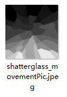
3.ComputeShader和屏幕后处理
在上一节中我们已经得到了贴图和公式，剩下的就是算就完了，compute shader中我们得到了计算过后的x，这个x表示的是该像素点掉落的距离，那么我们会把这个原本这个位置的像素点的值更新到当前帧下这个像素点位置的y值减去掉落距离的位置的像素，与此同时我们需要判断这个位置是否在屏幕内，如果不在屏幕内，大可以直接不管。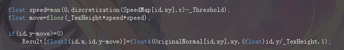 这样计算得到的被赋值过的像素点显然都是有碎玻璃的像素点，那么没有的呢？之前在需求中我们提到屏幕中没有玻璃碎块的区域应该显示原有的样子，也就是玻璃背后的样子。
要实现这样的效果，只需要在每次更新结果之前都把所有的像素赋值为一个标记着没有玻璃碎片的值，让主compute shader通过上述运算去覆盖这个值，我使用w通道来完成这个任务，每次将像素值的w刷新为0，覆盖时设置为1。
然后在后处理shader中通过这个w值来判断取用哪边的图像。
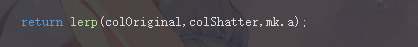 然后就是具体的数据处理了，我们知道实现屏幕碎裂靠的是一张法线贴图，如果不让这张法线贴图一起碎裂并剥落，那就不像样子了，所以我用输出RT的xy两个通道来存储法线贴图中xz的值，用来传递给shader。
此外，我们还需要一个uv值，因为碎裂屏幕是固定的图像，图像同样会跟随效果一起剥落，我们还需要记录一下某位置到底来自于原来屏幕上的哪个像素，这个值显然就是id.y/_TexHeight，我把这个值存到RT的z通道上。
于是，compute shader输出的RT的xy通道分别存储了法线贴图的xz通道值，z通道存储了图像对应原本的uv的y通道值，w通道存储了这个位置是否有碎裂的玻璃，填的满满的（？
最后就是在脚本里实现这个过程：
0.start中把上述的贴图资源作为数据传入compute shader，并且定好屏幕的width和height，做好初始化。
1.进行碎裂，将Threshold设置为1，截一张图传给shader作为碎裂屏幕的贴图。
2.update中把当前的threshold值传给compute shader，让compute shader进行运算，并且输出targetRT，并且将一些可以灵活调整的参数传入后处理shader，完成一轮生命周期。
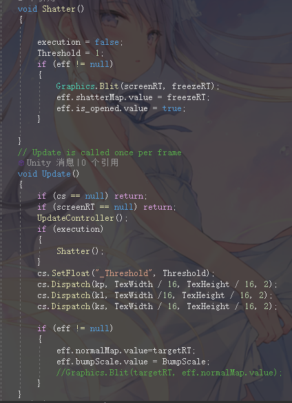 最后就是在shader里扭一下法线，采样一下开始碎裂时的截图，一切就都结束了。
4.后处理ComputeShader需要注意的几个问题
真结束了就好了，事实上大部分时间都被用来解决一些踩到的坑了……1.compute shader kernel大小问题：如果做出来之后，右侧和上侧出现了没有遮挡的位置，那就是kernel大小问题，或者说根本原因是声明的RT的宽度或高度不是kernel相应值的倍数，这在声明RTsize等于Screen.width，Screen.height时尤其明显，要解决这个方法只要把size离散化成kernel的整数倍就行了。
2.gamma空间变换问题，shader在采样贴图时会自动进行一次gamma变换，但是compute shader输出的值并没有进行这样的变换，这导致z通道传进去的uv.y值会有明显的错误，导致畸变的效果，需要手动把传入的采样值进行一次gamma变换。
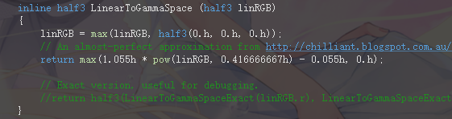 在UnityCG.cginc里抄了个gamma变换。 3.碎片在剥落时留下明显的行状噪声并出现孔洞，这个问题会在后面两节解决，也是这个问题让我意识到在碎屏剥落问题上，这个解法并不“划算”。
5.效果优化-离散化
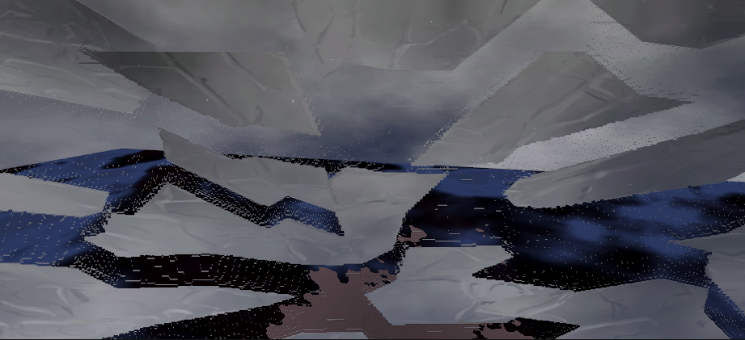
导致这些噪声的原因是绘制出来的速度贴图在存入unity进行压缩和缩放的时候会被自动进行滤波，导致颜色边缘会出现一些不必要的值，这些滤波在线性变换的时候当然没有问题，但在进行我们在compute shader中使用的非线性变换时就会很明显地离散化。当然，最好的方法是让速度贴图在压缩和缩放的时候不被滤波，不过至少我目前还不知道怎么实现。
于是想了几个复杂度较高但效果还过得去的做法。
首先，进行离散化，我们对速度贴图中几个出现频率高的值进行特定，让采样时得到的值只能是这些特定值中的值，这个过程可以通过脚本工具来实现自动化，也可以手动填值，在值的种类比较小且不需要大批量生产贴图的时候，手动填值还是比较合算的。
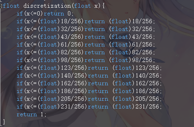 在进行离散化之后，孔洞明显减小了，但是还是会出现条状的噪声。
6.中值滤波
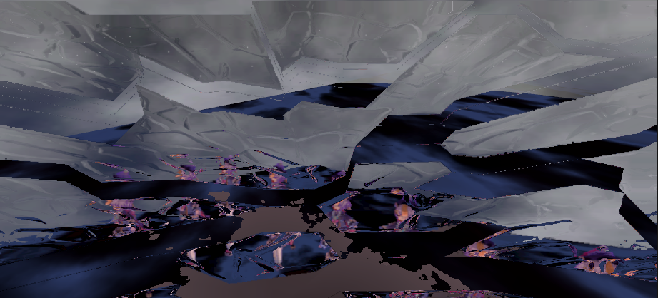
进行了离散化之后可以看见孔洞几乎完全消失了，但是条状噪声还是很明显，这些条状噪声产生的原因是在图像进行滤波的时候，有一片交界处会把两边区域的颜色进行混合，导致在用两边区域本身的颜色离散化之后它们还是混合在一起的，并且因为分别更接近两个离散值的原因形成条状。这里有很多不同的方法可以尝试，但后来我选择了一个简单无脑但效果很好的方法：中值滤波。
中值滤波本来是数字图像处理里面用来处理椒盐噪声的处理方法，而在这个效果里条状噪声本来就是处在被孤立的状态，而且由于只出现在交界处，所以面积肯定不大，完全可以当作椒盐噪声来处理。
原本中值滤波的算法是以当前像素为中心点取9个像素，把中位数和阈值比较来进行的，因为这里我们只需要把孤立的噪声去掉就行了，所以有效的通道值只有一个w，而w又只有01二值，只需要把9个像素点的w值全部加起来和4进行比较就能判断是否需要滤波，而在这里我们是本者宁可多滤掉一个点，也不能放过一个噪声的想法，所以我没有把当前像素点本身算进去，只算了周围的八个像素点。
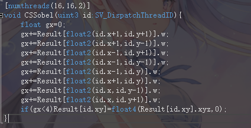 （实际上和sobel没什么关系） 然后就得到了最终的效果。
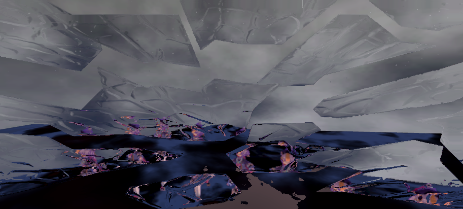
7.一些扩展思路
写累了……本来我以为效果做出来会不是那么好看，结果发现远看的时候还是相当不错的，但是依然还有很多扩展空间。
1.优化空间复杂度，在本例中用到的贴图数量属实是有点多了，有一张截屏用的rt、这张rt解出来的截屏、一张速度贴图、一张法线贴图、一张targetRT，这些图都要放到compute shader里算，带来的损耗还是不容忽视的。
2.水平运动，本例其实完全可以实现基于物理的更真实的碎片运动轨迹，但在示例里却只是让它们沿着y轴下降了。
3.交互，整个效果本就是在脚本中一键下令触发，更新threshold完成动画，那么这个下令和更新的过程完全可以用于交互，制作出相当不错的特效。
写完了整个过程之后发现在computeshader的加持下，很多本来不敢用的算法都可以应用来做效果了，不过还是不敢上瘾，老老实实做点兼容性高的效果吧。
代码：链接。